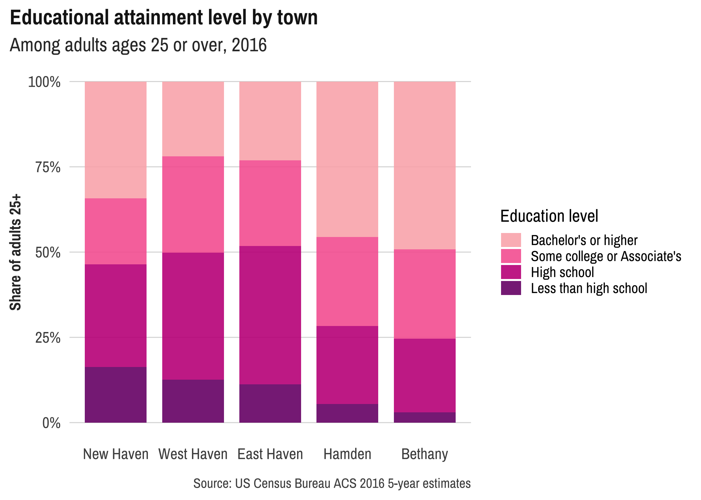

camiller is a set of convenience functions, functions for working with ACS data via tidycensus, and a ggplot theme.
Installation
Install from GitHub with:
# install.packages("devtools")
devtools::install_github("camille-s/camiller")Example
This is a basic example of two of the major functions in this package, add_grps and calc_shares:
library(dplyr)
library(camiller)
edu_list <- list(ages25plus = 1, less_than_high_school = 2:16,
high_school = 17:18, some_college_or_aa = 19:21, bachelors_plus = 22:25)
edu_rates <- edu_detail %>%
dplyr::group_by(name) %>%
add_grps(edu_list, group = variable, moe = moe) %>%
calc_shares(group = variable, denom = "ages25plus", moe = moe)
edu_rates
#> # A tibble: 25 x 6
#> # Groups: name [5]
#> name variable estimate moe share sharemoe
#> <chr> <fct> <dbl> <dbl> <dbl> <dbl>
#> 1 Bethany ages25plus 4013 148 NA NA
#> 2 Bethany less_than_high_school 120 83 0.03 0.021
#> 3 Bethany high_school 866 177 0.216 0.043
#> 4 Bethany some_college_or_aa 1053 208 0.262 0.051
#> 5 Bethany bachelors_plus 1974 257 0.492 0.061
#> 6 East Haven ages25plus 21230 490 NA NA
#> 7 East Haven less_than_high_school 2380 363 0.112 0.017
#> 8 East Haven high_school 8612 554 0.406 0.024
#> 9 East Haven some_college_or_aa 5334 511 0.251 0.023
#> 10 East Haven bachelors_plus 4904 468 0.231 0.021
#> # … with 15 more rowsPlus this ggplot theme.
library(ggplot2)
library(forcats)
library(showtext)
font_add_google("Archivo Narrow", "archivo")
showtext_auto()
showtext_opts(dpi = 300)
edu_rates %>%
ungroup() %>%
filter(!is.na(share)) %>%
arrange(variable, share) %>%
mutate(name = as_factor(name) %>% fct_rev()) %>%
mutate(variable = fct_rev(variable) %>%
fct_relabel(clean_titles) %>%
fct_recode("Bachelor's or higher" = "Bachelors plus",
"Some college or Associate's" = "Some college or aa")) %>%
ggplot(aes(x = name, y = share, fill = variable)) +
geom_col(position = "fill", width = 0.8, alpha = 0.9) +
scale_y_continuous(labels = scales::percent) +
scale_fill_manual(values = c("#FBB4B9", "#F768A1", "#C51B8A", "#7A0177")) +
labs(x = NULL, y = "Share of adults 25+", fill = "Education level",
title = "Educational attainment level by town",
subtitle = "Among adults ages 25 or over, 2016",
caption = "Source: US Census Bureau ACS 2016 5-year estimates") +
theme_din(base_family = "archivo")